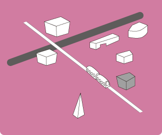
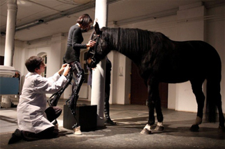
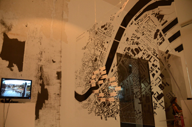

「OKセンター」は、街の中心である広場から路面電車でアルスエレクトロニカセンターとは反対方向に1つ、歩いても5分位の所に位置しています。「OKセンター」は、オーストリアの中でも現代美術のための最先端施設のひとつであり、インスタレーションやメディアアートの作品に重点を置いた美術制作の分野で重要なポジションを担っており、子供達やゲストに美術教育プログラムやガイドツアーを提供しています。
「OKセンター」で開催される「CyberArts 2011」では、「Prix Ars Electronica」と呼ばれる7つのカテゴリーからなるコンペティションの受賞作品の一部が展示されていました。今年の「CyberArts 2011」では、ハイブリッドアート、インタラクティブアートやデジタルミュージック＆サウンドアートの入賞作品が選ばれていました。さすが受賞作品とあって、どの作品もその作品に込められた意味やアイデアなどがとても興味深く、ひとつひとつの展示を見ているとあっという間に時間が過ぎていってしまい1日ではすべてを鑑賞する事はできませんでした。センター内で同時開催されていた「HOHENRAUSCH.2」も「CyberArts 2011」同様、見逃せない作品が多くありました。
そんな数ある展示の中から気になった作品の紹介とともに個人的な解釈も交えながらレポートします。
OKセンター公式HP
http://www.ok-centrum.at/

Continuization Loop
 150本のフィルムが上下に交差するミニマルな作品。フィルムは、光を通す透明な部分と光を遮断する黒い部分で構成される。上昇するフィルム、もしくは下降するフィルムだけに注目したり、わざとピントを外して見てみたりすることで多面的な解釈が楽しめる作品。ピントを外した時のビジュアルは有機的なノイズにも見えてくる。
150本のフィルムが上下に交差するミニマルな作品。フィルムは、光を通す透明な部分と光を遮断する黒い部分で構成される。上昇するフィルム、もしくは下降するフィルムだけに注目したり、わざとピントを外して見てみたりすることで多面的な解釈が楽しめる作品。ピントを外した時のビジュアルは有機的なノイズにも見えてくる。
Face to Facebook
 現在のインターネット上のインフラになりつつあるソーシャルネットワーキングサービス「facebook」。サービスの成功の鍵となるのが、公開情報にアクセスするためのAPI。この作品では「顔写真」に注目して、SNSにおけるプライバシー上の問題を取り扱っている。APIを悪用することにより、顔写真が意図せぬことに利用できてしまう。
現在のインターネット上のインフラになりつつあるソーシャルネットワーキングサービス「facebook」。サービスの成功の鍵となるのが、公開情報にアクセスするためのAPI。この作品では「顔写真」に注目して、SNSにおけるプライバシー上の問題を取り扱っている。APIを悪用することにより、顔写真が意図せぬことに利用できてしまう。
algorithmic search for love
 この作品は、膨大な量の映画作品から「セリフ」という軸で検索することが可能で、大量の情報を参照する方法の一つとして提示されている。検索した「セリフ」を含む様々な映画のワンシーンが次々と流れていくが、つながりの意外性や、撮影された時代などにに注目してみていると、また違った映画の楽しみ方ができるだろう。
この作品は、膨大な量の映画作品から「セリフ」という軸で検索することが可能で、大量の情報を参照する方法の一つとして提示されている。検索した「セリフ」を含む様々な映画のワンシーンが次々と流れていくが、つながりの意外性や、撮影された時代などにに注目してみていると、また違った映画の楽しみ方ができるだろう。

Newstweek
 街中におとりとなるアクセスポイントを設置し、そこに接続した内容は Newstweek らの手により盗聴されてしまう。さらにその内容は遠隔から書き換えることも可能だ。わずか 35 ユーロで作れてしまうこのデバイスは、ネット上の情報の信頼性とプライバシーについて考えさせてくれる。
街中におとりとなるアクセスポイントを設置し、そこに接続した内容は Newstweek らの手により盗聴されてしまう。さらにその内容は遠隔から書き換えることも可能だ。わずか 35 ユーロで作れてしまうこのデバイスは、ネット上の情報の信頼性とプライバシーについて考えさせてくれる。

May the Horse Live in Me
 動物と人間の共存がテーマのこの作品。脚部のアタッチメントにまず目をひかれるが、馬の血液を人体に輸血するパフォーマンスに驚きを感じる。人間は他の動物より優れていると考える価値観からは衝撃を持って迎えられる内容だろう。
動物と人間の共存がテーマのこの作品。脚部のアタッチメントにまず目をひかれるが、馬の血液を人体に輸血するパフォーマンスに驚きを感じる。人間は他の動物より優れていると考える価値観からは衝撃を持って迎えられる内容だろう。
A Balloon for …
 Davide Tidoni による風船割りパフォーマンス "A Balloon for …"。風船を割る場所によって変化する残響音に注目した作品。
Davide Tidoni による風船割りパフォーマンス "A Balloon for …"。風船を割る場所によって変化する残響音に注目した作品。

Cinema for Primates
 Rachael Mayeri の "Cinema for Primates" は、チンパンジーが映った映像をチンパンジーに向けて放送する試み。
Rachael Mayeri の "Cinema for Primates" は、チンパンジーが映った映像をチンパンジーに向けて放送する試み。
Inside the Tropospheric Laboratory
 Agnes Meyer-Brandis の "Inside the Tropospheric Laboratory" は、オゾン層研究機関の機器の簡易モデルの展示。
Agnes Meyer-Brandis の "Inside the Tropospheric Laboratory" は、オゾン層研究機関の機器の簡易モデルの展示。
Is there a horizon in the deepwater?
 石油プラットフォームのミニチュアと、水面の会場が印象的な HeHe による "is there a horizon in the deep water"
石油プラットフォームのミニチュアと、水面の会場が印象的な HeHe による "is there a horizon in the deep water"
Safe Cuddling
 Helge Fischer による "Safe Cuddling"。この絶対安全子供服は、行き過ぎた安全に対して疑問を投げかける作品。
Helge Fischer による "Safe Cuddling"。この絶対安全子供服は、行き過ぎた安全に対して疑問を投げかける作品。
Six-Forty by Fourty-Eighty
 Jamie Zigelbaum, Marcelo Coelho による "Six-Forty by Fourty-Eighty" は多色発光するインターフェース。自由な配置が可能。
Jamie Zigelbaum, Marcelo Coelho による "Six-Forty by Fourty-Eighty" は多色発光するインターフェース。自由な配置が可能。
「AFO」は、街の中心である広場からゆっくり歩いても4分程の所に位置しています。外観は、石壁、チョコレートカラー、オレンジカラーで構成されていて、シックでヨーロッパを感じさせるデザイン。「AFO」は、アーキテクチャフォーラムオーストリアの頭文字です。アーキテクチャは、「人々の生活、経済的、文化的なスペースの基盤となるため特別な責任を持っている」という理念のもとに活動しており、特にアーキテクチャ以外の文化や教育機関、芸術分野とのオープンな交流を行っているようです。
スマートフォンの隆盛により身近となった GPS機能を始め、「場所」と「テクノロジー」の関係性は以前にも増して重要になってきている昨今。「Sensing Place / Placing Sense Exhibision」では、「場所」をテーマにした作品が展示されていました。ユビキタス技術は、都市と公共空間の伝統的定義を変えようとしているのです。今回の展示は、新たな都市システムの中の様々な感覚(視覚、聴覚、触覚、運動感覚、人間の知覚を超えている電磁界など)に目を向けているように感じました。
以下で紹介している「Kazamidori」は、インタビューページ(近日公開予定)にもご登場頂いた小川秀明氏が在籍している「h.o (エイチドットオー)」の作品です。
AFO公式HP
http://www.ok-centrum.at/

Kazamidori
 思い立ったかのようにチャーミングな仕草で動き出す風見鶏。アルスエレクトロニカフェスティバルの公式サイトにアクセスしてきたユーザの位置を元にどの方角を向くかが決定される。ウェブサイトへのアクセスという知覚できない現象に対してのフィードバックが興味深い。
思い立ったかのようにチャーミングな仕草で動き出す風見鶏。アルスエレクトロニカフェスティバルの公式サイトにアクセスしてきたユーザの位置を元にどの方角を向くかが決定される。ウェブサイトへのアクセスという知覚できない現象に対してのフィードバックが興味深い。
iGeigar
 先の原発事故により一般的に認知されるようになったガイガーカウンターを iPhone 向けのデバイスとして実装。会場では 0.14〜0.18 マイクロシーベルトの値を指していた。興味本位で手持ちの財布を近づけてみるがカウンターに影響を与えるほどではなかったようだ。
先の原発事故により一般的に認知されるようになったガイガーカウンターを iPhone 向けのデバイスとして実装。会場では 0.14〜0.18 マイクロシーベルトの値を指していた。興味本位で手持ちの財布を近づけてみるがカウンターに影響を与えるほどではなかったようだ。

Active Listening Sites
 リンツ市内で記録された音を映像と共に鑑賞する作品。バイノーラル録音で収録されたと思わしきのその音声は、画面を車が横切っていく音を的確に捉えており、映像を凝視していると、その場に実際に足を運んでいるのではないかと錯覚を覚えるほどであった。
リンツ市内で記録された音を映像と共に鑑賞する作品。バイノーラル録音で収録されたと思わしきのその音声は、画面を車が横切っていく音を的確に捉えており、映像を凝視していると、その場に実際に足を運んでいるのではないかと錯覚を覚えるほどであった。
リンツ市内には旧大聖堂と新大聖堂の二つの大聖堂があり、新大聖堂ではアルスエレクトロニカフェスティバルにまつわるパフォーマンスが行われました。新大聖堂は、高さ134メートル、収容人数は、20,000人というオーストリア国内でも随一の大きさを誇ります。ハウプト広場から少し西にある、この大聖堂に向かってみると、中のホールはしんと静まっており、ステンドグラスが非常に美しく、来場者の目を奪います。
その新大聖堂で、Sam Auingerによるパフォーマンス「100,000m³ BEWEGTE LUFT」が行われました。
エレクトロニックベースの持続音から始まり、ラップトップとパイプオルガンによる、美しいテクスチャーのサウンドスケープとフィールドレコーディングを中心としたライブセット。終盤にはスポークンワードもいくつかちりばめられ、普段決して体験する事のできない迫力のあるとても貴重なパフォーマンスでした。全体を通して感じたのがホールが生み出す残響音の美しさ。「音の洪水」と表現してしまうにはいささか陳腐ではありますが、カテドラルでの音響を体験したことのない人に、ぜひともお勧めしたい内容でした。

 Hannes Strobl が演奏する、エレクトロニックベースの持続音で幕開け。
Hannes Strobl が演奏する、エレクトロニックベースの持続音で幕開け。
 中心人物の Sam Auinger。 宗教施設にラップトップという組み合わせに驚き。
中心人物の Sam Auinger。 宗教施設にラップトップという組み合わせに驚き。
 当日はセッションも行われた、大聖堂に備え付けられているパイプオルガン。
当日はセッションも行われた、大聖堂に備え付けられているパイプオルガン。
聖堂で行われる展示を待っていると、偶然ながらミサに遭遇することができました。あたりを見回すと、地元の小さい子供や、年配の方が中心に集まっているようでした。 前方から詩の朗読が聞こえてきたので、興味本位で前方の席に着座しました。しばらくするとパイプオルガンが鳴り響き、辺り一面が聖歌で覆われ、聖歌は聖堂の残響音と溶け込み、暖かく響き渡っていました。キリスト教を信奉していない自分が申し訳なくなり、途中で退散してしまいましたが、西洋の宗教観の一部分を垣間みることができた、貴重な体験となりました。
ホール天井。美しく湾曲する柱と、理路整然と積み上げられているレンガ。
非常に美しいステンドグラス。宗教的なモチーフがあしらわれている。
宗教感をあまり感じない、科学的なイメージを想像させるステンドグラスも。